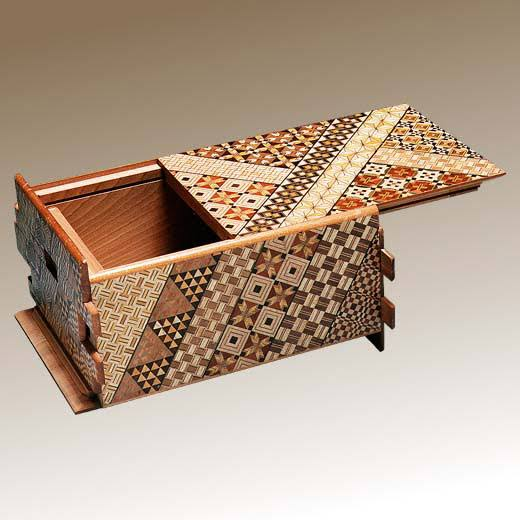
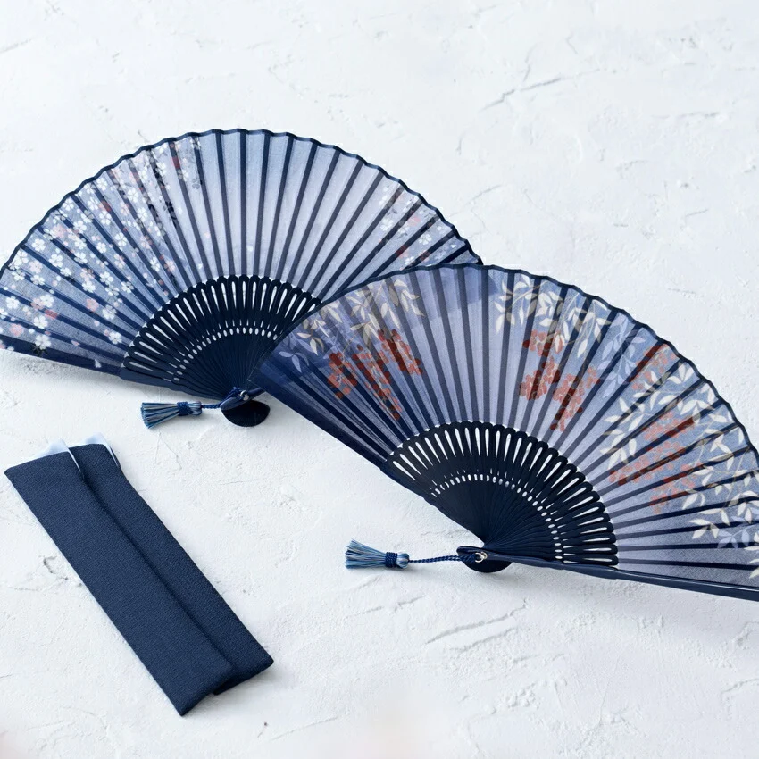
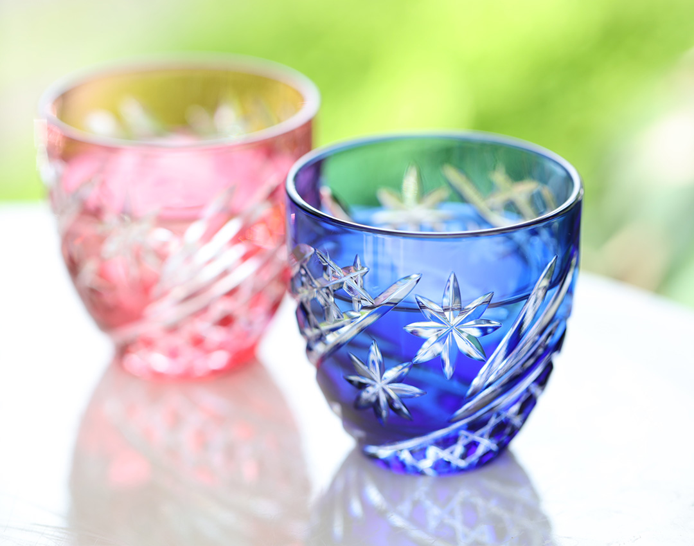

日本の伝統工芸が織りなす、美と技の世界へようこそ
Welcome to the world of beauty and craftsmanship in traditional Japanese arts.
知りたい工芸品を選択してください（専用ページへ移動します） Choose a craft to view its detail page.

緻密な幾何学模様と天然木の温もり Intricate geometric patterns and natural wood warmth.

「末広がり」の美しさと洗練された機能美 Functional elegance symbolizing prosperity and good fortune.

ガラスに刻まれた鮮やかなカット模様 Brilliant cut glass patterns creating stunning light reflections.
重厚な質感と素朴で温かみのある鉄瓶 Durable cast ironware known for heat retention and rustic beauty.
日本の「伝統的工芸品」は、100年以上の歴史を持ち、主に手仕事によって作られ、人々の暮らしの中で受け継がれてきた工芸品です。 法律に基づいて、経済産業大臣によって指定されています。
Japan's "Traditional Crafts" are masterworks preserved for over 100 years, predominantly handcrafted and passed down through generations.